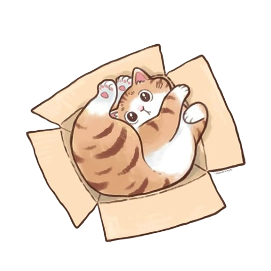
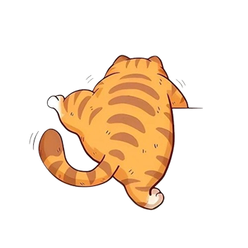
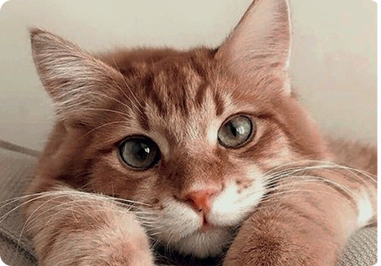
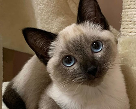
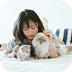
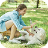
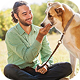

From Shelter to Your Heart
Dari tempat perlindungan menuju hati yang peduli. Bersama, kita bisa membawa harapan baru bagi mereka yang membutuhkan rumah dan kasih sayang.



PawFriend.
Teman berbulu menanti rumah barumu.

Ready to Adopt

Snowy
Jenis: Kucing Siam
Umur: 5 Bulan
Kelamin: Betina
Sifat: Aktif, penasaran, suka memanjat
Kesehatan: Sudah vaksin & sehat
Catatan: Cocok buat yang suka kucing manja dan suka ditemani ngobrol

Miko
Jenis: Kucing Tabby
Umur: 4 Bulan
Kelamin: Jantan
Sifat: Pintar, gampang akrab, suka main bola
Kesehatan: Belum steril, tapi sehat
Catatan: Suka main sama anak-anak, jadi cocok buat rumah ramai

Ucup
Jenis: -
Umur: 7 Bulan
Kelamin: Jantan
Sifat: Manja
Kesehatan: Sudah vaksin
Catatan: Sering ajak lari pagi

Mochi
Jenis: Anjing Golden Retriever
Umur: 3 Bulan
Kelamin: Jantan
Sifat: Ceria dan Aktif
Kesehatan: Sudah Vaksin
Note: Cocok untuk keluarga yang suka aktivitas outdoor

Bella
Jenis: Kucing Persia
Umur: 7 Bulan
Kelamin: Betina
Sifat: Lembut, suka dipangku, nggak rewel
Kesehatan: Sudah vaksin
Catatan: Butuh rutin grooming karena bulunya panjang

Dobby
Jenis: Anjing Dachshund
Umur: 5 Bulan
Kelamin: Jantan
Sifat: Penasaran, suka mengendus-endus, lincah banget
Kesehatan: Sudah vaksin, sehat
Catatan: Cocok buat kamu yang suka aktivitas outdoor
Customer Testimonial

Rina
Pemilik Kucing
"Mengadopsi melalui PawFriend merupakan kepusan terbaik!"

Andi
Pemilik Anjing
"Adopsi di PawFriend prosesnya cepat dan Mudah!"

Budi
Pemilik Anjing
"Terima kasih PawFriend telah mempertemukan kami"
Andin
"Adopsi anjing dari PawFriend merupakan keputusan terbaik yang pernah saya buat"
Frequently Asked Questions

Bulan Peduli Hewan!
Dapatkan starter kit gratis untuk setiap adopsi sepanjang bulan ini